Unidad 4.3 Evolución, ordenamiento y clasificación del territorio
El territorio es transformado tanto por las dinámicas de los ecosistemas como por las dinámicas de las comunidades que lo habitan, y por las decisiones de las instituciones que de una y otra manera lo gobiernan. Bogotá experimentó un crecimiento poblacional sin precedentes durante el siglo XX, por lo que en esta Sección se analizará con el uso de planos, mapas e indicadores demográficos y urbanísticos, la evolución del territorio desde la documentación histórica en el año 1600 hasta nuestros días, con especial énfasis en el siglo XX y XXI, cuando hubo un acelerado crecimiento de la huella urbana y cambios profundos en la cobertura del suelo.
3.1. Evolución de la cobertura del suelo: de paisajes naturales a paisajes culturales
La evolución de la cobertura del suelo del territorio por causas y dinámicas naturales, demográficas, sociales y económicas se debe analizar desde la perspectiva histórica del impacto que tuvo el crecimiento poblacional y económico de los siglos XX y XXI, no solo en el área del Distrito Capital, sino en los municipios circundantes. Como se ha visto a lo largo de este Componente, las dinámicas ecológicas influyen en las dinámicas sociales y culturales, y viceversa, por lo que se debe analizar desde el componente natural y el social, qué les ocurrió a los pastos y cultivos —vocación agrícola—, los bosques y páramos —vocación forestal y de conservación—, y a las zonas urbanas.
A continuación, se hace un análisis multitemporal de la cobertura entre la cobertura del suelo en el año 1977, 1988, 1997 y 2018 mediante un análisis geográfico de imágenes satelitales.
Mapa 26. Comparación de las coberturas del suelo de Bogotá y algunos municipios de la Sabana, 1977–2018
 Fuente: Pablo Leyva. Bogotá Metropolitana. Ciudad, territorio y ambiente. 2021. 1
Fuente: Pablo Leyva. Bogotá Metropolitana. Ciudad, territorio y ambiente. 2021. 1
La cuantificación de las áreas de estos diferentes tipos de cobertura permite analizar los cambios en la calidad ambiental y conflictos socioecológicos generados debido a las diferentes transformaciones territoriales que han ocurrido a lo largo de este período.
Imagen 25. Área por tipo de cobertura del suelo en diferentes períodos para Bogotá y municipios cercanos
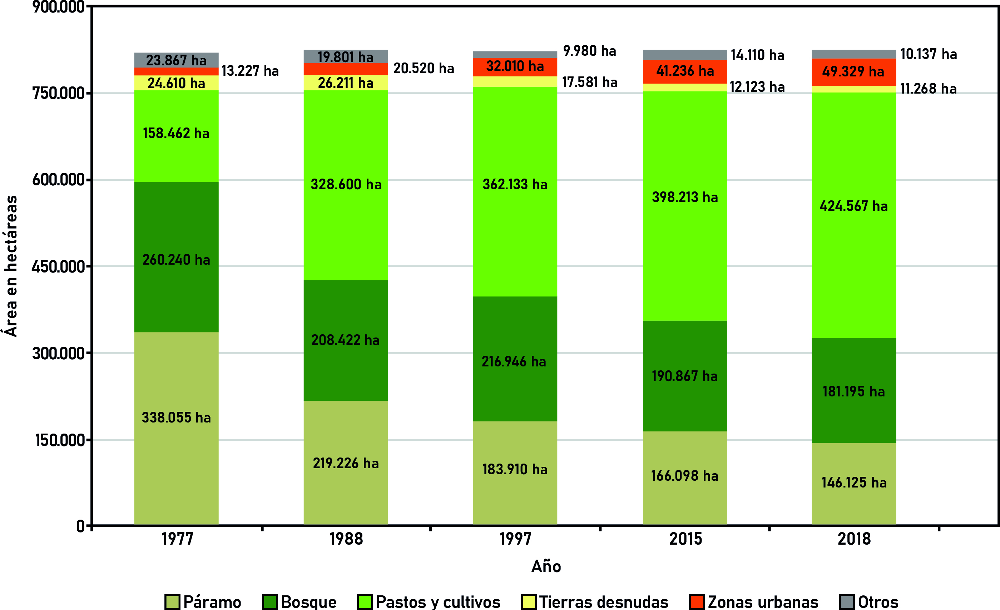
Fuente: Pablo Leyva. Bogotá Metropolitana. Ciudad, territorio y ambiente. 2021.En este período 1977 a 2018 se observa una disminución de más de la mitad del área que originalmente era de páramo, y en 1977 representaba la cobertura más común. El área de bosques también se redujo en alrededor de 80 000 ha —incluida los humedales—, mientras que las zonas urbanas y los usos agrícolas —pastos y cultivos— aumentaron considerablemente alrededor de 40 000 ha para el primero, y alrededor de 170 000 ha la segunda.
Este cambio profundo en el paisaje y las coberturas del suelo, en un período de cincuenta años se debe a transformaciones territoriales en las escalas colectiva —dinámica demográfica de crecimiento acelerado—, cultural —dinámica económica, globalización, cambios en costumbres y hábitos—, paisajística —destrucción de ecosistemas de humedales, bosque y páramo, expansión agropecuaria, expansión del paisaje urbano, desarrollo de infraestructura y vías, entre otras— e identitarias —pérdida de formas de vida rurales, pérdida de saberes tradicionales, destrucción de elementos del patrimonio natural y cultural—. Estas transformaciones territoriales ocurrieron diferenciadamente en los municipios aledaños de Bogotá.
Para que exista una gestión territorial eficiente y efectiva, esta debe ir acompañada de un cambio radical en los mecanismos de gobernanza hacia modelos verdaderamente adaptativos y policéntricos, lo cual requiere una transformación en los valores y expresiones individuales y culturales; un enfrentamiento real, transparente y desde la evidencia técnica y científica a las desigualdades de poder y los intereses económicos que generan conflictos socioecológicos y se benefician de la insostenibilidad y los “vacíos legales”; la generación colectiva y cultural de legitimidad para los escenarios de planificación y gestión supramunicipales, yendo más allá de los escenarios de participación formal; y, el reconocimiento de que la incertidumbre es inherente y que los instrumentos, herramientas y planes deben ser flexibles y adaptables a cada contexto, no rígidos.
Se puede decir que el marco jurídico e institucional del ordenamiento territorial, de la gestión ambiental y de los recursos naturales es una solución técnica y legal a un problema que es fundamentalmente político, social y económico. Por no considerar esto, a pesar del robusto marco jurídico e institucional de ordenamiento territorial y de gestión ambiental, se ha visto un crecimiento desordenado, en detrimento de la calidad ambiental y de vida de los habitantes, y entre otros aspectos, el aumento de la vivienda informal en Bogotá y la Sabana.
3.2. Crecimiento de la huella urbana e indicadores urbanísticos de Bogotá desde 1600 a la actualidad
La sobreposición cronológica de planos e indicadores de la ciudad permite analizar los resultados de acontecimientos naturales, políticos, jurídicos y administrativos de enorme relevancia para la ciudad y la nación. Para efectos metodológicos se ha divido la evolución de la huella urbana de Bogotá en los siguientes momentos según periodos cartográficos de acuerdo con la cartografía existente 2 :
1. Ciudad colonial: 1600 a 1816.
2. Ciudad republicana: siglo XIX 1816-1906.
3. Ciudad transición: primera mitad del siglo XX 1906-1954.
4. Ciudad moderna: segunda mitad del siglo XX 1954-1991.
5. Ciudad actual/futura: Constitución Política de 1991 a la actualidad 1991-2023.
3.2.1. Crecimiento urbano ciudad colonial (1600-1816)
Este periodo se enmarca entre los albores de la fundación de Santafé de Bogotá, de donde espacialmente se parte del plano interpretativo elaborado por el historiador Carlos Martínez que esboza cómo era la ciudad para inicios del siglo XVI; y, por otro lado, el plano geométrico de Santafé de Bogotá de 1816 elaborado por Domingo Esquiaqui temporalmente en la época de la reconquista de la Nueva Granada, pero muy cerca del ocaso del virreinato.
Ilustración 1. Crecimiento de la huella urbana, 1600-1816
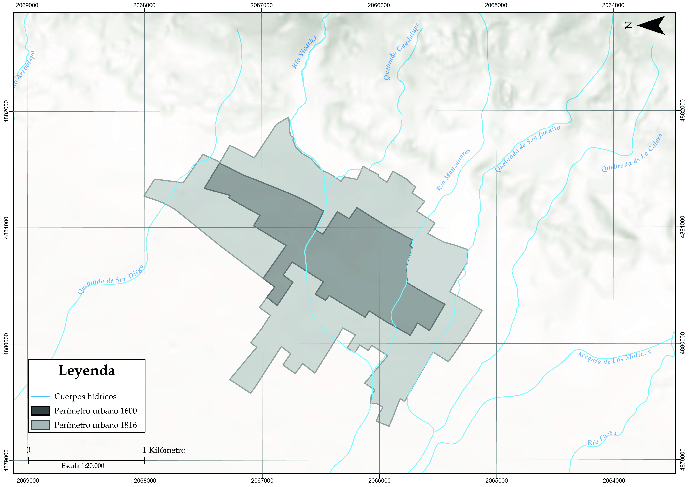
Fuente: Elaboración Sociedad de Mejoras y Ornato de Bogotá con base en el plano de Carlos Martínez Jiménez 1600 y Domingo Esquiaqui 1816.La ciudad del siglo XVI según estudios de reconocidos historiadores de Bogotá contaba con un número aproximado de 13 000 habitantes entre españoles, mestizos e indígenas, población que, para la época cercana a la Independencia, rondaba en poco más de 22 000 habitantes. La huella urbanizada también había crecido pasando de 111 ha a 341 ha en 1816, es decir un factor de crecimiento de 3,06; observándose un patrón concéntrico de expansión, que junto con otros datos e indicadores se presentan en la siguiente tabla.
Tabla 1. Indicadores urbanísticos, 1600
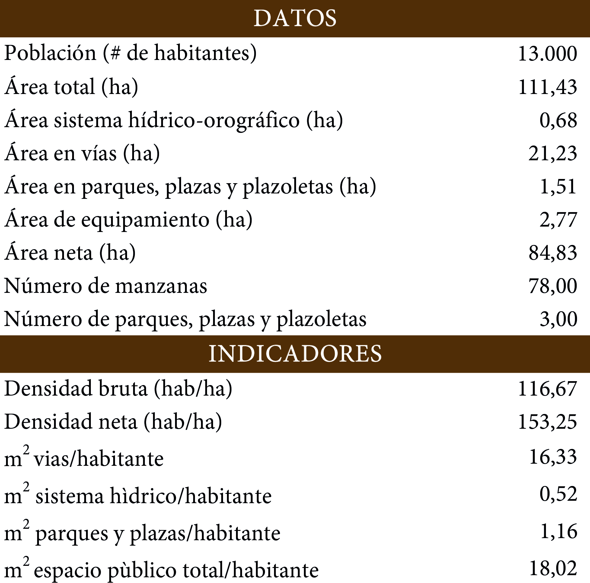
Fuente: Elaboración Sociedad de Mejoras y Ornato de Bogotá sobre el plano resultante del ajuste de imprecisiones cartográficas y del proceso de digitalización, escalado y georreferenciación.
Tabla 2. Indicadores urbanísticos, 1816
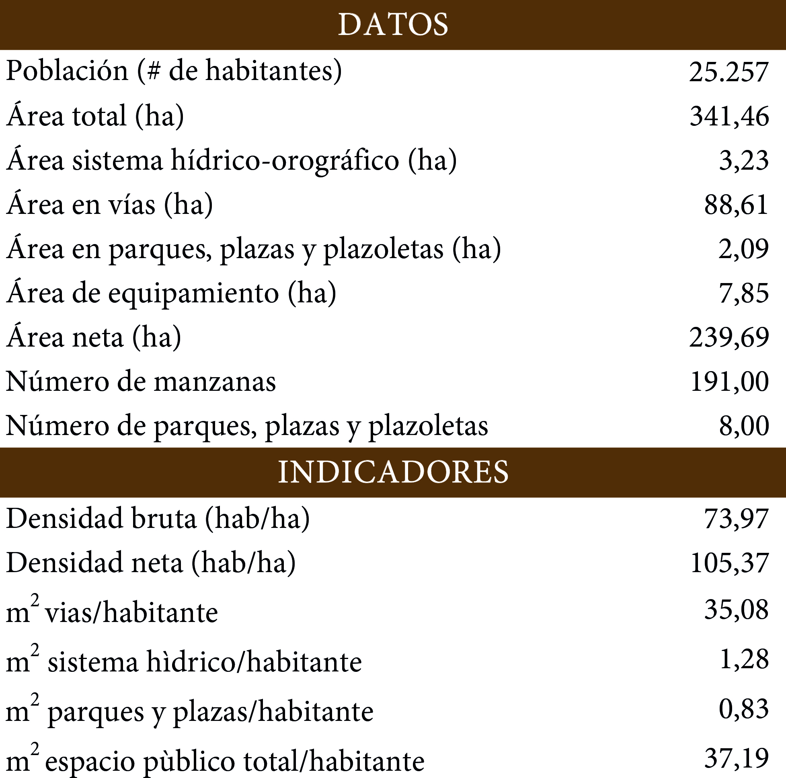
Fuente: Elaboración Sociedad de Mejoras y Ornato de Bogotá sobre el plano resultante del ajuste de imprecisiones cartográficas y del proceso de digitalización, escalado y georreferenciación.
3.2.2. Crecimiento urbano ciudad republicana (1816-1906)
Para el análisis de este periodo, se toman tres planos representativos a lo largo del siglo XIX: el plano de 1816, cercano al inicio de la Independencia, el plano de 1849 elaborado por Agustín Codazzi y el plano de 1906 elaborado por Francisco Javier Vergara y Velasco, destacado geógrafo colombiano, abarcando así la totalidad de la primera centuria de la nación constituida como república.
Ilustración 2. Crecimiento de la huella urbana, 1816-1849
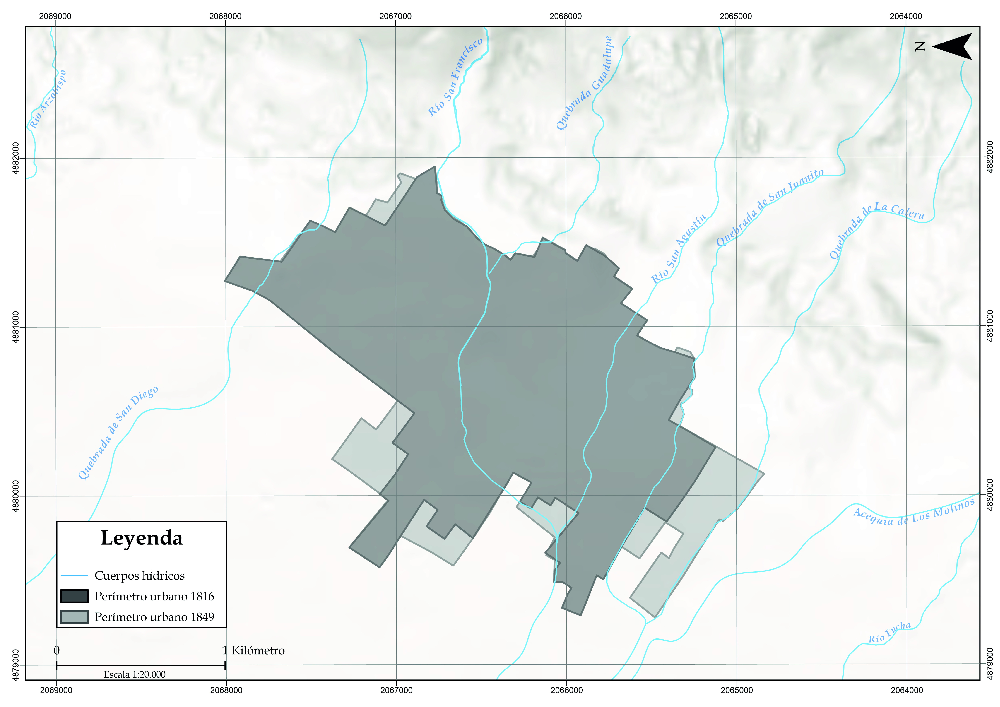
Fuente: Elaboración propia con base en el plano de Domingo Esquiaqui 1816 y plano de Agustín Codazzi de 1849.El plano de 1816 pertenece a un contexto temporal que marca los finales del periodo de la colonia, e inicio de la Independencia y con ello a la ciudad republicana. De los 25 000 habitantes de 1816, la ciudad pasó a tener 39 765 habitantes y en cuanto a la huella urbanizada se pasó de una extensión de 341 ha a 386,35 ha, un crecimiento de 45 ha con una tasa de crecimiento anual aproximada de 0,37 %; todo lo anterior en un rango de treinta y tres años. La expansión de la huella urbana se dio esencialmente hacia la parte sur con la aparición de la parroquia de Santa Bárbara y al occidente creció la parroquia de San Victorino, siendo el borde occidental de la ciudad y punto de llegada de viajeros y mercancías provenientes de Honda y la Sabana.
La tasa promedio anual de crecimiento de la huella urbana, contrasta con la tasa promedio anual de crecimiento poblacional que según DATACIVILIDAD fue de 1,38 %, que refleja un rezago en cuando al crecimiento urbano versus el crecimiento poblacional dando indicios de los problemas de higiene y salubridad que iba a padecer la ciudad debido a las precarias condiciones de habitabilidad. Los datos e indicadores se presentan en las siguientes tablas:
Tabla 3. Indicadores urbanísticos, 1816
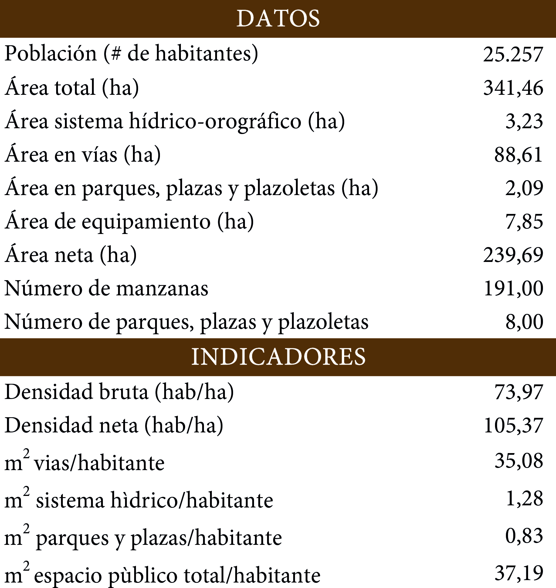
Fuente: Elaboración Sociedad de Mejoras y Ornato de Bogotá sobre el plano resultante del ajuste de imprecisiones cartográficas y del proceso de digitalización, escalado y georreferenciación.
Tabla 4. Indicadores urbanísticos, 1849
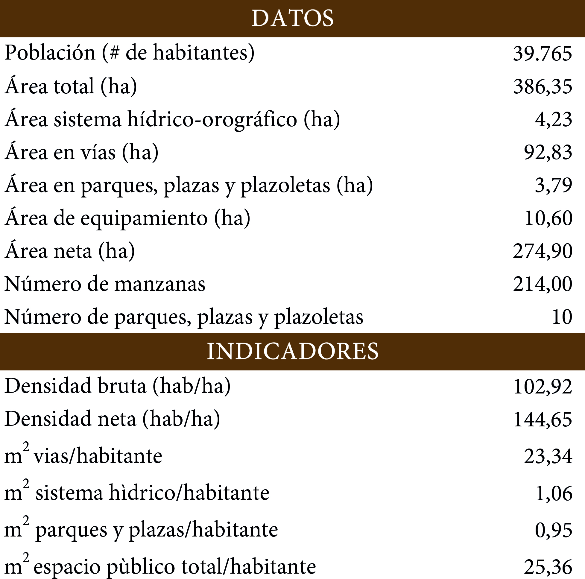
Fuente: Elaboración Sociedad de Mejoras y Ornato de Bogotá sobre el plano resultante del ajuste de imprecisiones cartográficas y del proceso de digitalización, escalado y georreferenciación.
El siguiente punto de comparación para el periodo republicano, corresponde a 1849 y 1906, segunda mitad del siglo XIX, donde la ciudad pasó de cerca de 40 000 habitantes en 1849 a tener más de 100 000 habitantes para la primera década del siglo XX.
Ilustración 3. Crecimiento de la huella urbana, 1849-1906
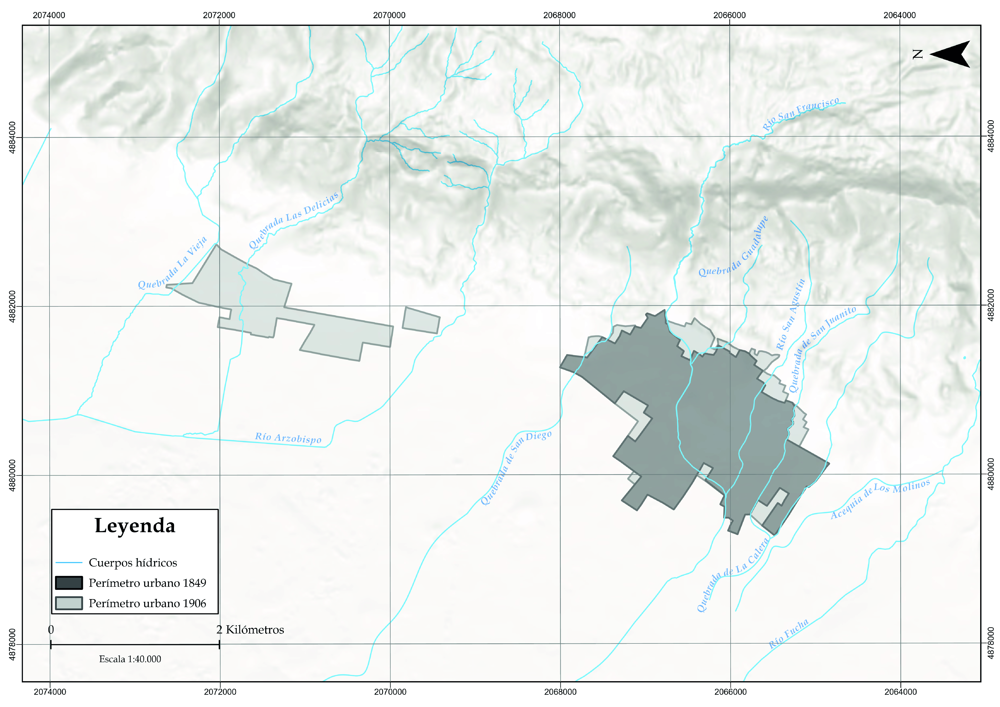
Fuente: Elaboración Sociedad de Mejoras y Ornato de Bogotá con base en el plano de Agustín Codazzi de 1849 y el plano de 1906 elaborado por Francisco Javier Vergara y Velasco.En cuanto a la huella urbanizada, en 1849 de 386 ha de extensión, se expandió a 612 ha, fundamentalmente con el surgimiento del caserío de Chapinero finalizando el siglo XIX y que para inicios del nuevo siglo ya era un barrio de Bogotá con un desarrollo significativo, comunicado con el centro de la ciudad a través de la línea del ferrocarril del norte. El factor de crecimiento fue de 1,58 con una tasa promedio anual de crecimiento de 0,81 %, donde vuelve a ser bajo con relación al crecimiento poblacional, que se daba a una tasa promedio anual del 1,81 %; los problemas de higiene y salubridad ya eran evidentes y se había creado en la ciudad la Junta de Higiene.
Tabla 5. Indicadores urbanísticos, 1849
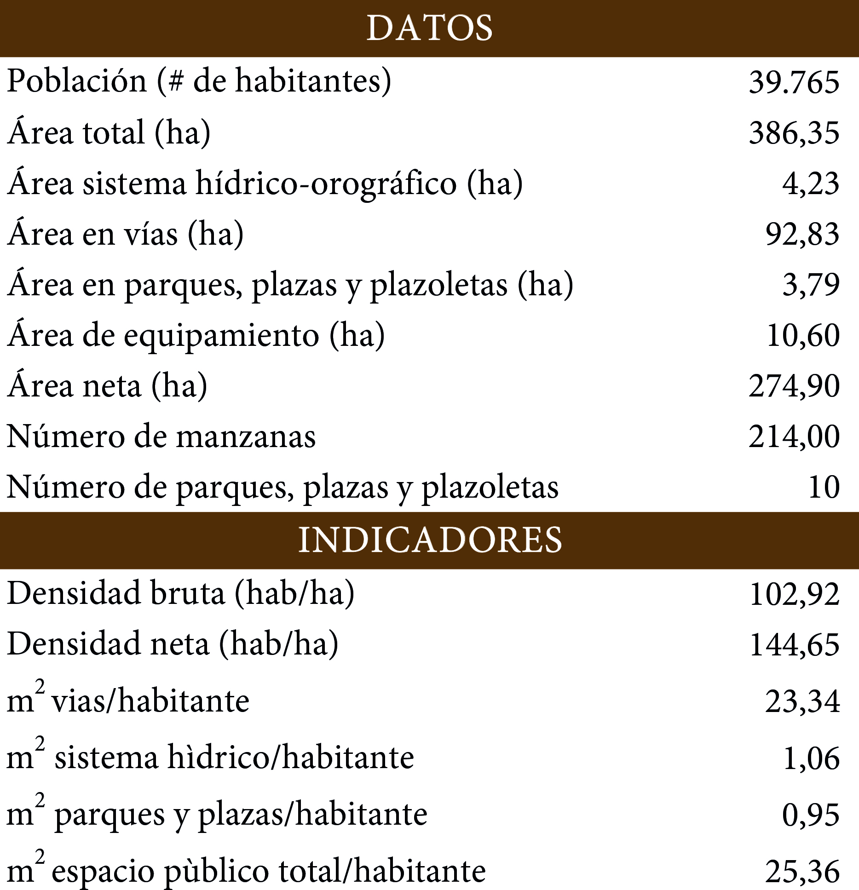
Fuente: Elaboración Sociedad de Mejoras y Ornato de Bogotá sobre el plano resultante del ajuste de imprecisiones cartográficas y del proceso de digitalización, escalado y georreferenciación.
Tabla 6. Indicadores urbanísticos, 1906
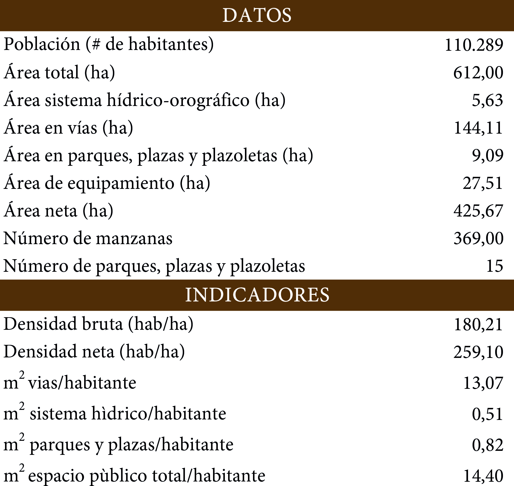
Fuente: Elaboración Sociedad de Mejoras y Ornato de Bogotá sobre el plano resultante del ajuste de imprecisiones cartográficas y del proceso de digitalización, escalado y georreferenciación.
3.2.3. Crecimiento urbano de la ciudad en transición (1906-1954)
La transición urbana a la modernidad, está enmarcada en la primera mitad del siglo XX, tomando tres planos: plano de 1906 de autoría de Francisco Javier Vergara y Velasco, que marca el ocaso de la ciudad republicana; plano de 1932, época para la cual ya ha empezado a madurarse una estructura administrativa municipal donde se había establecido una Secretaría de Obras Públicas Municipales, que un año después daría origen a la creación del departamento de Urbanismo a la cabeza del arquitecto urbanista Karl Brunner; y plano de 1954 que marcó la creación del Distrito Especial 3, anexando los municipios circunvecinos de Suba, Usaquén, Engativá, Bosa, Usme y Fontibón que desde ese momento se convirtieron en localidades de Bogotá. El vecino municipio de Soacha mantiene hasta hoy su condición de municipio, aunque está conurbado con Bogotá.
Ilustración 4. Crecimiento de la huella urbana, 1906-1932
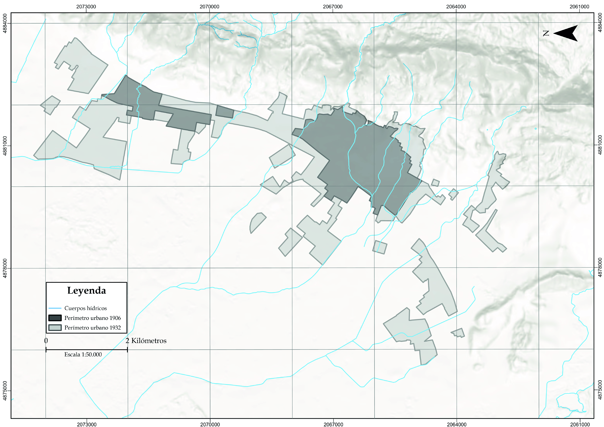
Fuente: Elaboración propia con base en el plano de 1906 elaborado por Francisco Javier Vergara y Velasco, y el plano de 1932 elaborado por la Secretaría de Obras Públicas Municipales.La huella urbanizada que para principios del siglo XX había crecido hasta 612 ha, para 1932 ya era de 1611 ha, es decir un factor de crecimiento de 2,63 y una tasa promedio anual de 3,79 %, la más alta en lo que se ha estudiado hasta el momento y en un lapso de apenas veintiséis años. El crecimiento lo marcaron la aparición de los barrios obreros; hacia el noroccidente barrios como El Gaitán, Colombia, La Paz, Quinta Mutis, el Rosario y las Granjas; al suroccidente en inmediaciones del camino que conducía a Soacha, los barrios Olaya, Santander y Quiroga.
Poblacionalmente, la cantidad de habitantes se había multiplicado pasando de 110 000 habitantes a poco más de 280 000, a razón de una tasa promedio anual muy proporcional al crecimiento de la huella urbanizada, tal y como se observa en las siguientes tablas.
Tabla 7. Indicadores urbanísticos, 1906
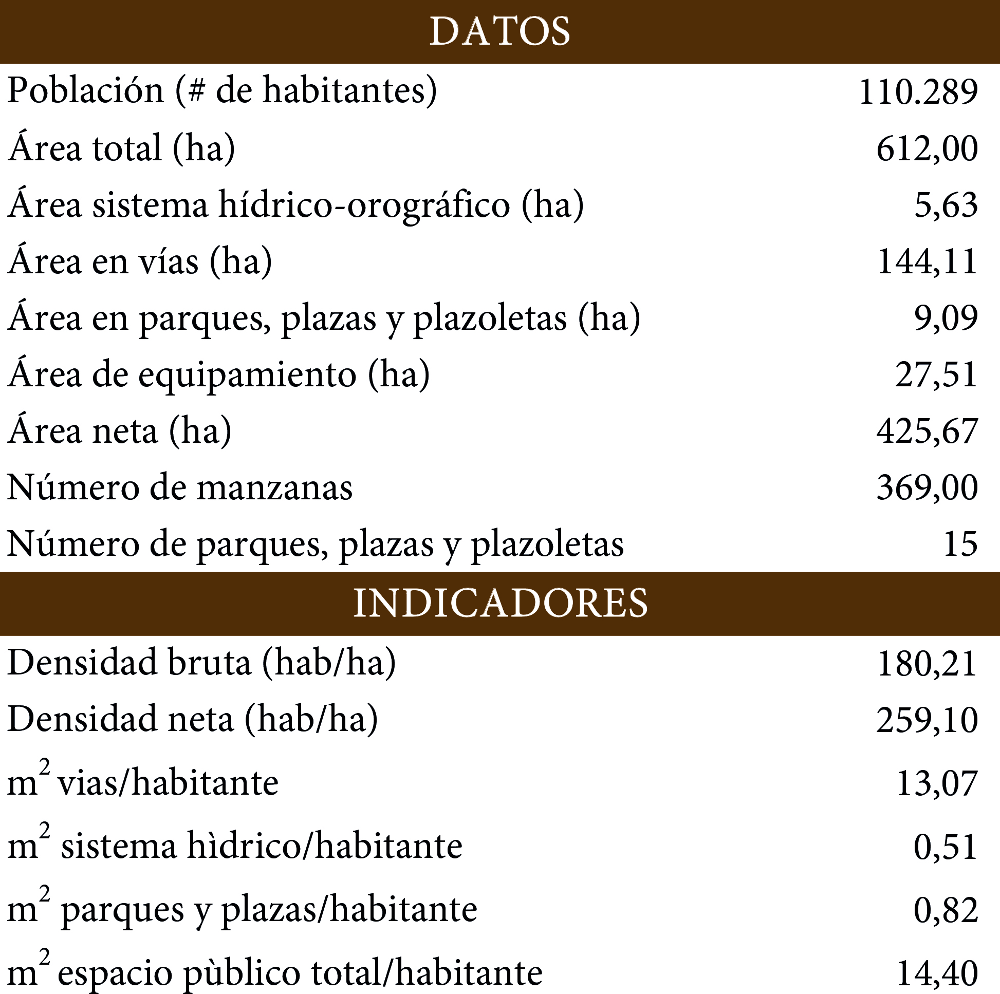
Fuente: Elaboración Sociedad de Mejoras y Ornato de Bogotá sobre el plano resultante del ajuste de imprecisiones cartográficas y del proceso de digitalización, escalado y georreferenciación.
Tabla 8. Indicadores urbanísticos, 1932
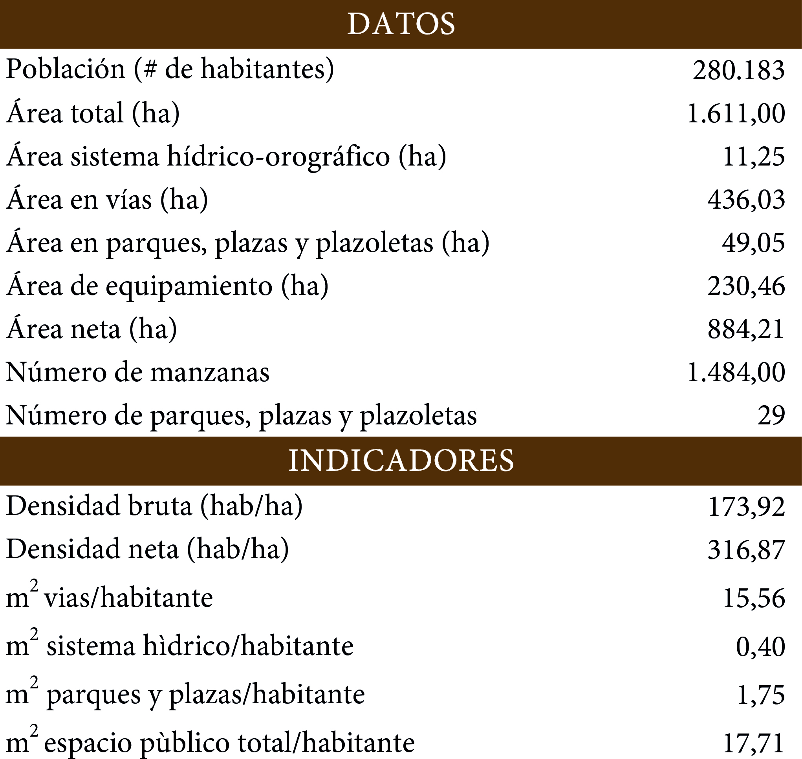
Fuente: Elaboración Sociedad de Mejoras y Ornato de Bogotá sobre el plano resultante del ajuste de imprecisiones cartográficas y del proceso de digitalización, escalado y georreferenciación.
Para la época que se materializó la conformación del Distrito Especial, anexando los municipios circunvecinos mencionados con anterioridad, la ciudad había crecido su huella urbanizada, que ya superaba las 5000 ha, con una tasa de crecimiento promedio anual importante de 5,31 %; la sobreposición cartográfica evidencia una serie de asentamientos dispersos en la periferia, sin más conexión que unos ejes viales con respecto al núcleo urbanizado y en jurisdicción de los municipios vecinos.
Muchos de los desarrollos urbanísticos de esta época, en especial de barrios populares, se desarrollaron en las nuevas localidades del Distrito Especial; el barrio Las Ferias en la localidad de Engativá o el Claret y Santa Lucia dentro de la localidad de Bosa.
Ilustración 5. Crecimiento de la huella urbana, 1932-1954
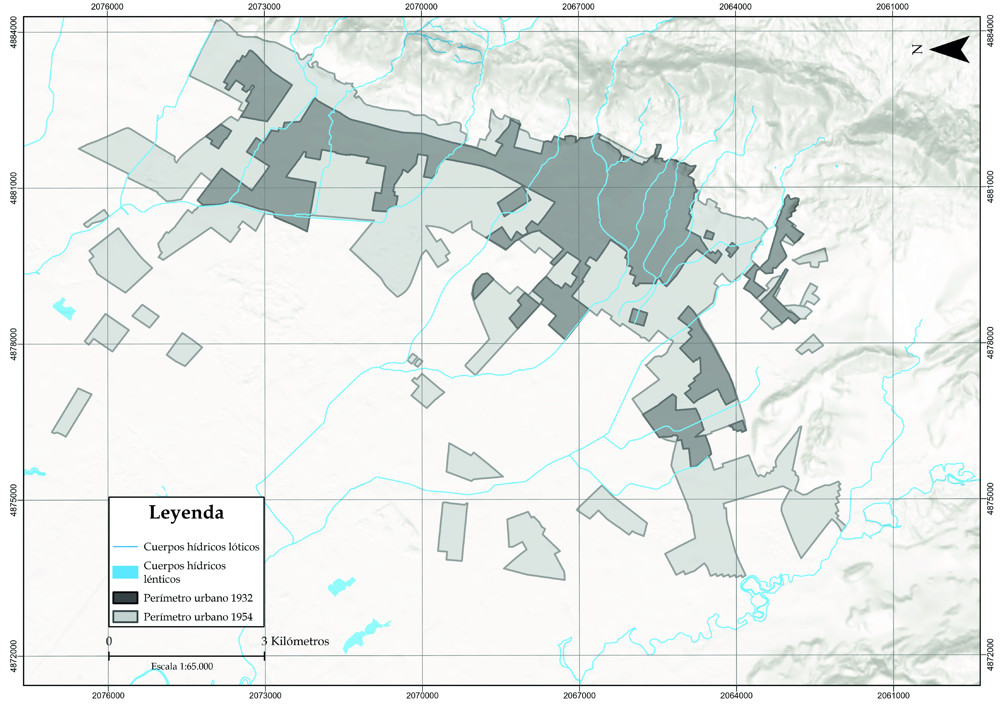
Fuente: Elaboración propia con base en el plano de 1932 elaborado por la Secretaría de Obras Públicas Municipales y plano de 1954 elaborado por el instituto geográfico Agustín Codazzi.El panorama a nivel poblacional da cuenta de un crecimiento superior a los 650 000 habitantes, con una tasa promedio anual de crecimiento de 5,6 %, muy similar al crecimiento de la huella urbanizada, y muy cerca de alcanzar el 1 000 000 de habitantes.
Tabla 9. Indicadores urbanísticos, 1932
Fuente: Elaboración Sociedad de Mejoras y Ornato de Bogotá sobre el plano resultante del ajuste de imprecisiones cartográficas y del proceso de digitalización, escalado y georreferenciación.
Tabla 10. Indicadores urbanísticos, 1954
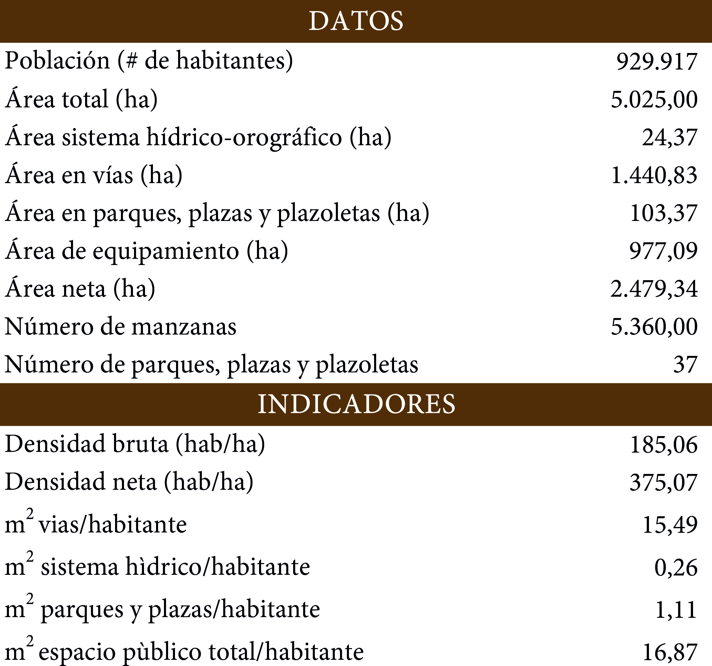
Fuente: Elaboración Sociedad de Mejoras y Ornato de Bogotá sobre el plano resultante del ajuste de imprecisiones cartográficas y del proceso de digitalización, escalado y georreferenciación.
3.2.4. Crecimiento urbano ciudad moderna (1954-1991)
La segunda mitad del siglo, fue referente en cuanto a la puesta en marcha de proyectos urbanos modernos inspirados en los ideales europeos de ciudad en cuanto a urbanismo y arquitectura; proyectos de gran envergadura de infraestructura vial como la construcción de la carrera 10a, la calle 26 y la autopista norte; y la formulación de planes y estudios urbanos que van desde el Plan Piloto de Le Corbusier hasta el Acuerdo 6 de 1990, que dan cuenta del espíritu de progreso de una sociedad que había cambiado mucho con respecto a la sociedad del siglo XIX.
Se han tomado para la Bogotá moderna tres planos que van desde el de 1954 levantado por el Instituto Geográfico Agustín Codazzi, seguido de los planos de 1976 y 1991, también de la entidad.
Ilustración 6: Crecimiento de la huella urbana, 1954-1976
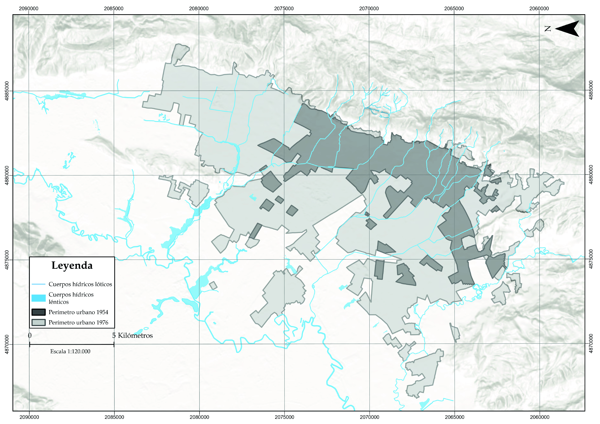
Fuente: Elaboración propia con base en el plano de 1954 elaborado por el instituto geográfico Agustín Codazzi y plano de 1976 elaborado por el Instituto Geográfico Agustín Codazzi.En un periodo de poco más de dos décadas la ciudad creció en su huella urbanizada poco más de 12 000 ha a una tasa promedio anual que se mantiene por encima del 5 %, una importante área de crecimiento se da hacia el norte de la ciudad, donde se rebasa el límite norte de Bogotá que había permanecido hasta la calle 134, parcelando los terrenos que se extendían aproximadamente hasta donde hoy es la calle 152, dando origen al desarrollo conocido como Cedritos.
Dentro de esta fase de modernización, también para esta época se desarrollan importantes proyectos urbanos de iniciativa estatal tale como la urbanización Niza que se desarrolló en varias etapas. Pablo VI, Ciudad Kennedy, entre otros, y por iniciativa privada la mayoría de los desarrollos emprendidos por las firmas urbanizadoras de Luis Carlos Sarmiento Angulo, y Fernando Mazuera y CIA. Poblacionalmente la ciudad aumentó cerca de 2 400 000 personas, a una tasa levemente más alta a la que se venía dando en el periodo anterior (5,87 %), alcanzando una población de 3 260 576 personas.
Tabla 11. Indicadores urbanísticos, 1954
Fuente: Elaboración Sociedad de Mejoras y Ornato de Bogotá sobre el plano resultante del ajuste de imprecisiones cartográficas y del proceso de digitalización, escalado y georreferenciación.
Tabla 12. Indicadores urbanísticos, 1976
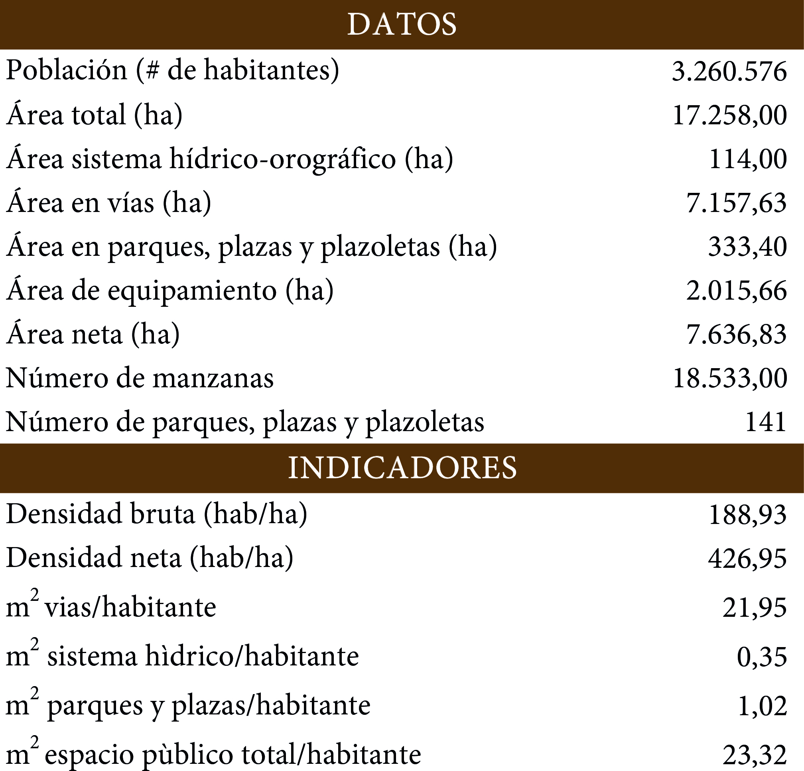
Fuente: Elaboración Sociedad de Mejoras y Ornato de Bogotá sobre el plano resultante del ajuste de imprecisiones cartográficas y del proceso de digitalización, escalado y georreferenciación.
Ilustración 7. crecimiento de la huella urbana, 1976-1991
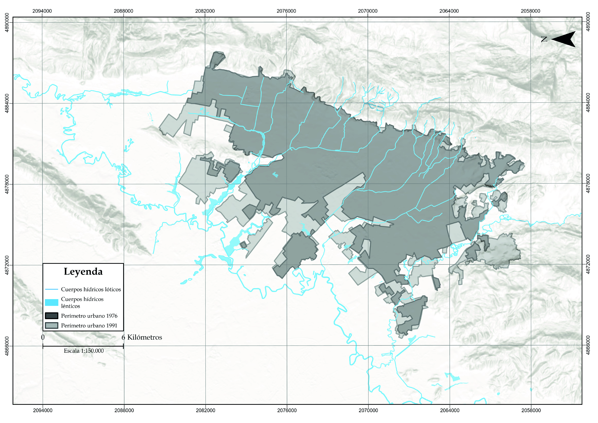
Fuente: Elaboración propia con base en el plano de 1976 elaborado por el instituto geográfico Agustín Codazzi y plano de 1991 elaborado por el instituto geográfico Agustín Codazzi.La ciudad alcanzó una extensión de 26 120 ha —8 800 ha urbanizadas más de las que tenía la ciudad en 1976 —, con un factor de crecimiento de 1,51 y una tasa de crecimiento anual estimada de 2,80 % en estos quince años. Poblacionalmente la ciudad pasó de tener 3 260 576 habitantes a poco más de los 5 000 000 con una tasa promedio anual de 3,07 %, que empieza a ralentizarse con respecto al crecimiento que se venía dando a partir de 1954.
Para efectos del presente texto, el periodo que se ha denominado modernidad, coincide con la reforma constitucional de 1991, que en su Título XI, “De la organización territorial” termina de cimentar el ordenamiento del territorio municipal y distrital.
Tabla 13. Indicadores urbanísticos, 1976
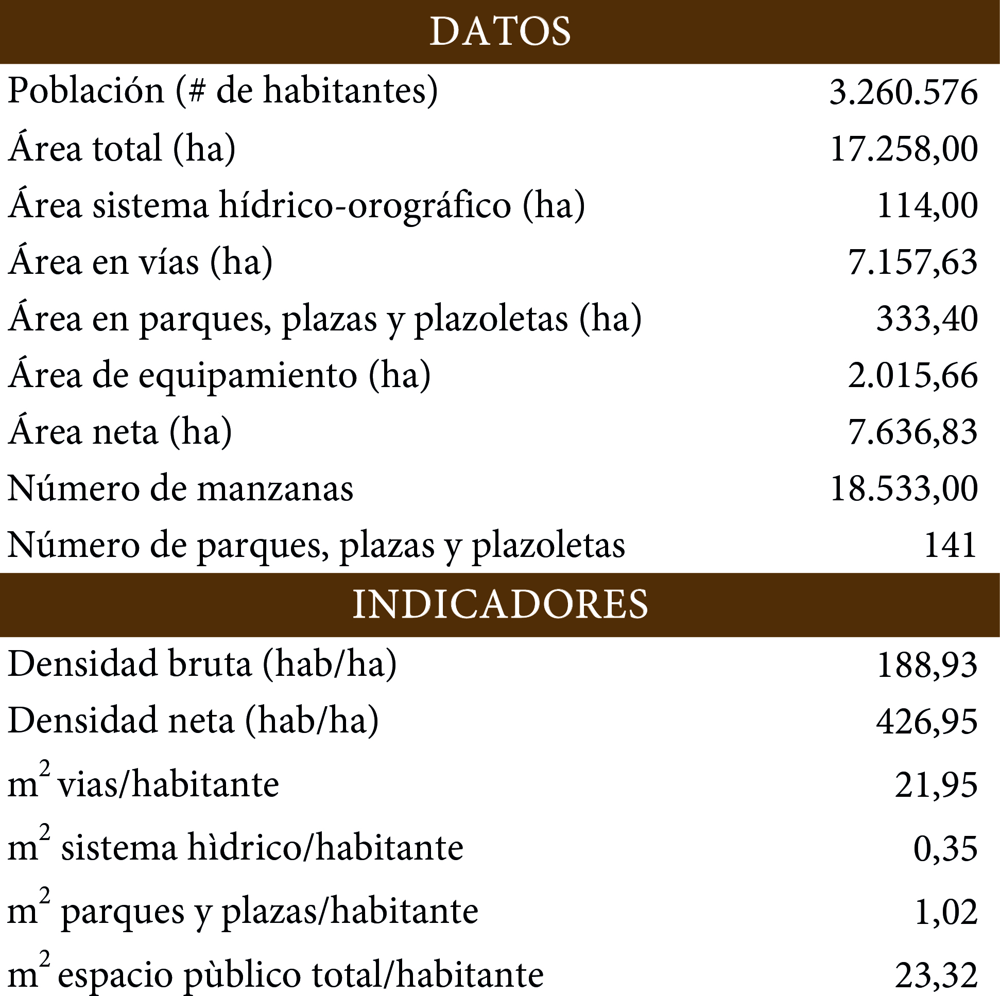
Fuente: Elaboración Sociedad de Mejoras y Ornato de Bogotá sobre el plano resultante del ajuste de imprecisiones cartográficas y del proceso de digitalización, escalado y georreferenciación.
Tabla 14. Indicadores urbanísticos, 1991
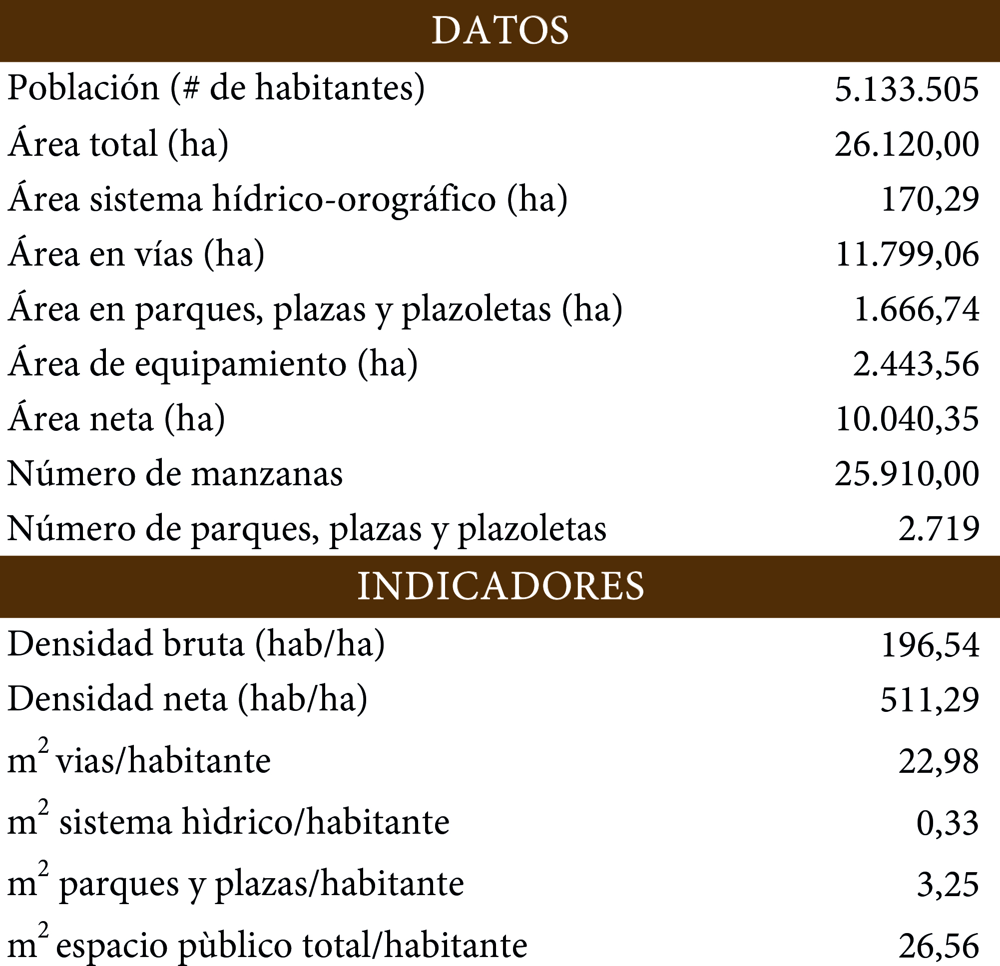
Fuente: Elaboración Sociedad de Mejoras y Ornato de Bogotá sobre el plano resultante del ajuste de imprecisiones cartográficas y del proceso de digitalización, escalado y georreferenciación.
3.2.5. Crecimiento urbano ciudad actual-futura (1991-2023)
El periodo denominado ciudad futura, está marcado para efectos del ordenamiento territorial por la adopción de la Ley 388 de 1997 que modificó la Ley 9a de 1989, luego de la reforma constitucional de 1991 y que determinó la formulación y adopción de los planes de ordenamiento territorial por parte de los municipios y distritos.
Se abarca un primer rango de tiempo que va de 1991 al 2000, año en el que se expide el Decreto 619 que adoptó el Plan de Ordenamiento Territorial del Distrito Capital, modificado y compilado por el Decreto 190 de 2004; y del 2000 al 2023, cercano a la modificación del POT mediante Decreto 555 de 2021.
Ilustración 8. Crecimiento de la huella urbana, 1991-2000
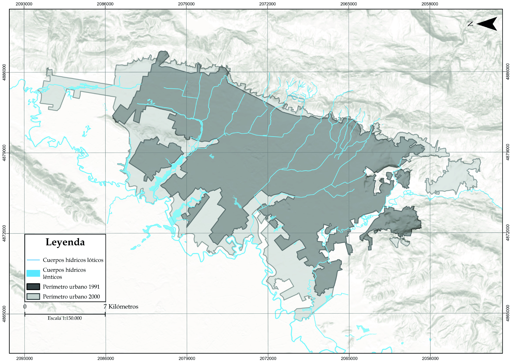
Fuente: Elaboración propia con base en el plano de 1991 elaborado por el instituto geográfico Agustín Codazzi y plano de Bogotá 2000 IGAC y plano del año 2000 tomado de la cartografía reglamentaria del Decreto 619 de 2000.De una extensión cercana a las 26 000 ha que la ciudad tenía en 1991, para el cambio de milenio la ciudad alcanzó una extensión de 33 000 ha, con una tasa de crecimiento anual de 2,84 % en una brecha de nueve años. Poblacionalmente la ciudad aumentó 1 119 157 habitantes, alcanzando una población estimada de 6 252 662 habitantes.
La adopción del Plan de Ordenamiento Territorial trajo consigo la incorporación al perímetro urbano de toda la zona norte que le seguía a la calle 153, una serie de desarrollos dispersos localizados en los cerros de Suba y Tibabuyes, y en general a lo largo de la franja paralela al río Bogotá. Al haber bastantes zonas sin desarrollar, la Ley 388 dispuso de instrumentos de escala intermedia como los planes zonales y los planes parciales para el desarrollo ordenado del territorio. Para el caso de la ciudad construida, particularmente en zonas localizadas en la jurisdicción de Bosa y Kennedy, donde se concentraba más de la mitad de la urbanización informal, el distrito se vio obligado a emprender programas de mejoramiento integral de barrios.
Tabla 15. Indicadores urbanísticos, 1991
Fuente: Elaboración Sociedad de Mejoras y Ornato de Bogotá sobre el plano resultante del ajuste de imprecisiones cartográficas y del proceso de digitalización, escalado y georreferenciación.
Tabla 16. Indicadores urbanísticos, 2000
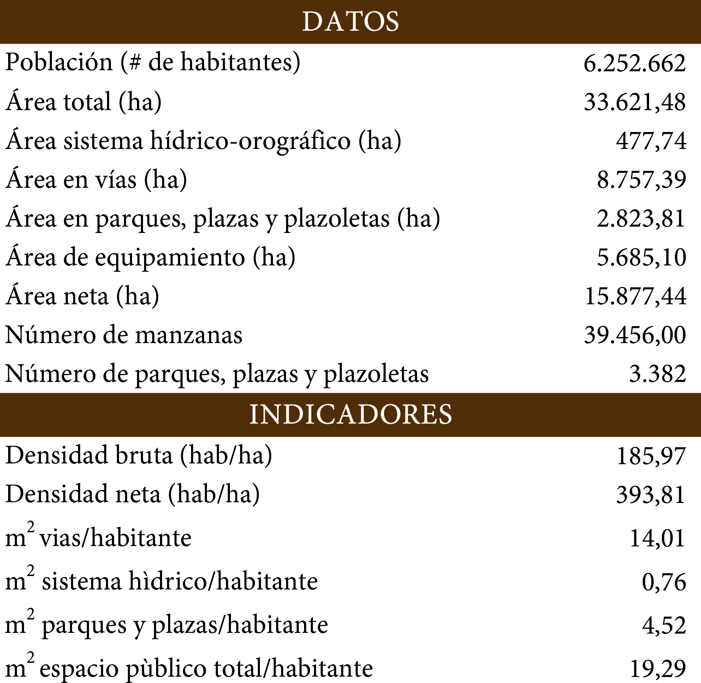
Fuente: Elaboración Sociedad de Mejoras y Ornato de Bogotá sobre el plano resultante del ajuste de imprecisiones cartográficas y del proceso de digitalización, escalado y georreferenciación.
El espacio público adquiere una dimensión preponderante en el ordenamiento territorial con la expedición de la Ley 388, específicamente lo contenido en los artículos 11, 12 y 13, y con su reglamentación mediante el Decreto 1504 de 1998, posteriormente se formuló la Política Nacional de Espacio Público. Bogotá cuenta hoy con un indicador cercano a los 5m2 en promedio de espacio público efectivo por habitante, lejos aún del indicador establecido por el Decreto 1077 de 2015 de 15 m2/habitante 4 .
Ilustración 9. Crecimiento de la huella urbana, 2000-2023
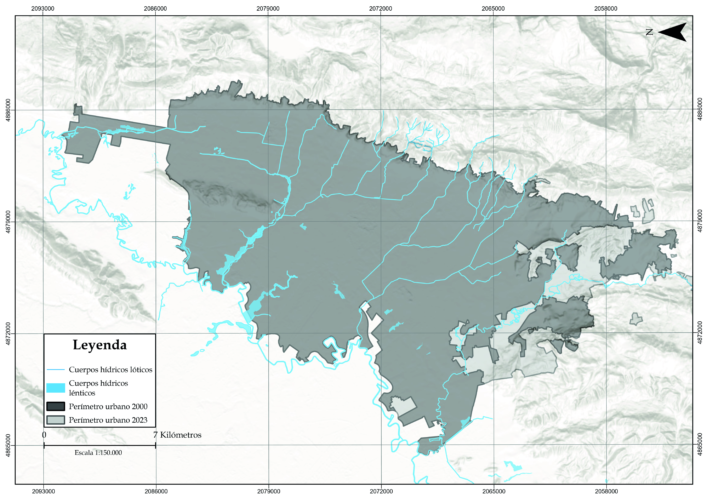
Fuente: Elaboración propia con base en el plano del año 2000 tomado de la cartografía reglamentaria del Decreto 619 de 2000 y plano 2023 elaborado con base en la cartografía del Decreto 555 de 2021.Luego de haberse cumplido la vigencia del Decreto 190 de 2004 y luego de intentos fallidos de administraciones distritales de formulación de Plan de Ordenamiento (2013 y 2019), finalmente bajo la administración de la alcaldesa Claudia López se expidió por decreto la nueva hoja de ruta para el ordenamiento territorial de Bogotá hasta 2033, Decreto 555 de 2021 que adoptó la “revisión general del Plan de Ordenamiento Territorial de Bogotá D. C.”.
Para este momento la ciudad contaba con una extensión cercana a las 39 000 ha, y una población estimada con base en proyecciones del censo de 2018 de 7 907 281 habitantes, lo que arroja una densidad bruta de 204 hab/ha. El índice de Espacio Público Efectivo se mantiene estable con relación al periodo anterior, muy cercano a 5 m2.
Tabla 17. Indicadores urbanísticos, 2000
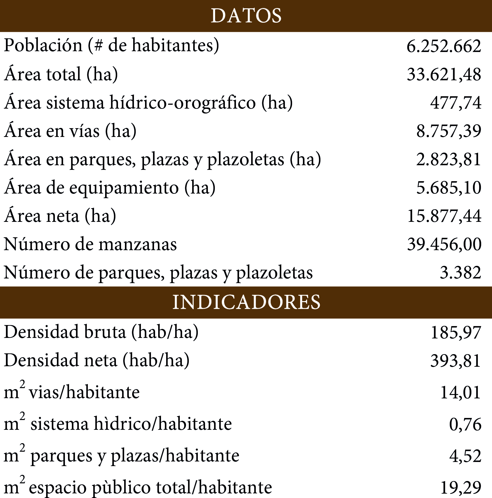
Fuente: Elaboración Sociedad de Mejoras y Ornato de Bogotá sobre el plano resultante del ajuste de imprecisiones cartográficas y del proceso de digitalización, escalado y georreferenciación.
Tabla 18. Indicadores urbanísticos, 2023
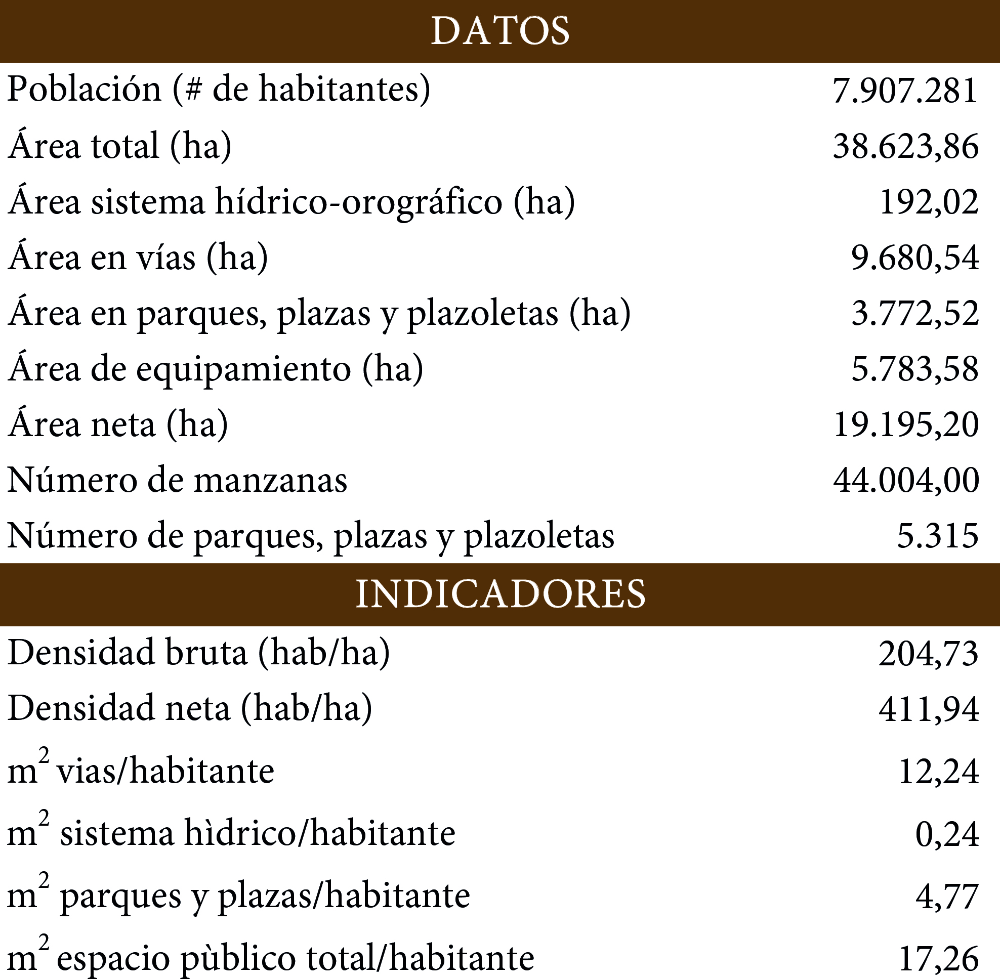
Fuente: Elaboración Sociedad de Mejoras y Ornato de Bogotá sobre el plano resultante del ajuste de imprecisiones cartográficas y del proceso de digitalización, escalado y georreferenciación.
3.3. Tratamientos urbanísticos en suelo urbano y de expansión urbana
3.3.1. Antecedentes de los tratamientos urbanísticos
En la legislación urbanística de Bogotá antes de la Ley 9a de 1989 y la Ley 388 de 1997, ya desde el Acuerdo 7 de 1979 que adoptó políticas y normas sobre el uso de la tierra en el Distrito Especial de Bogotá, se determinaban cuatro tratamientos urbanísticos 5: Rehabilitación, redesarrollo, conservación y desarrollo 6.
Con la entrada en vigor del Acuerdo 6 de 1990 que adoptó el Estatuto para el Ordenamiento Físico del Distrito Especial de Bogotá, los tratamientos determinados fueron los tratamientos generales del desarrollo y actualización, y los tratamientos especiales de conservación histórica, preservación orográfica e hídrica, incorporación y renovación urbana7 .
Tres años después del mandato a los municipios y distritos de formular y adoptar los planes de ordenamiento territorial por medio de la Ley 388 de 1997, Bogotá adoptó el Plan de Ordenamiento Territorial mediante Decreto 619 de 2000, modificado y compilado en 2004 por el Decreto 190; los tratamientos definidos para ese momento fueron: Tratamiento de desarrollo, consolidación, renovación urbana, conservación y mejoramiento integral 8 .
El Decreto 1077 de 2015, que compiló todas las disposiciones vigentes en cuanto al sector vivienda, ciudad y territorio, definió los tratamientos urbanísticos como “las determinaciones del plan de ordenamiento territorial, que, atendiendo las características físicas de cada zona considerada, establecen en función de las mismas normas urbanísticas que definen un manejo diferenciado del territorio para los distintos sectores del suelo urbano y de expansión urbana”9 .
El POT vigente —Decreto 555 de 2021— en coherencia con la norma nacional los define como “las determinaciones del presente Plan que, de acuerdo con las características físicas y funcionales de cada zona y el modelo de ocupación adoptado, permiten establecer las normas urbanísticas para un manejo de los distintos sectores del suelo urbano y de expansión urbana”10 .En cuanto a los tipos de tratamientos urbanísticos, establece que son: desarrollo, renovación urbana, consolidación, conservación y mejoramiento integral.
3.3.2. Tratamiento de Desarrollo
El Decreto 1077 de 2015 y el POT vigente en Bogotá definieron el tratamiento de desarrollo como “las determinaciones del componente urbano del Plan de Ordenamiento Territorial o de los instrumentos que lo desarrollen y complementen que regulan la urbanización de predios urbanizables no urbanizados en suelo urbano o de expansión urbana, definiendo para esas zonas los usos, densidades, índices de edificabilidad e instrumentos requeridos para su aplicación” 11.
3.3.3. Tratamiento de Renovación Urbana
El Decreto Nacional y el POT definieron el tratamiento de renovación como “las determinaciones del componente urbano del Plan de Ordenamiento Territorial, que están encaminadas a recuperar y/o transformar las áreas ya desarrolladas de las ciudades, entre otros fines, para, detener los procesos de deterioro físico y ambiental de los centros urbanos; promover el aprovechamiento intensivo de la infraestructura pública existente; impulsar la densificación racional de áreas para vivienda y otros usos, o garantizar la conveniente rehabilitación de los bienes históricos y culturales, todo con miras a una utilización más eficiente de los inmuebles urbanos y con mayor beneficio para la comunidad” 12. La norma nacional determina dos modalidades: la de reactivación y redesarrollo.
La modalidad de renovación por reactivación la define el Decreto 1077 como “la aplicable a las zonas en las cuales se promueve el cambio de las estructuras construidas al interior de los predios con el fin de promover la redensificación de los sectores en que se ubican conservando la estructura o trazado de los bienes de uso público y estimulando la generación de nuevos elementos arquitectónicos y naturales de los bienes de propiedad privada tales como antejardines, fachadas, aislamientos, retrocesos y demás”13 .
La modalidad de redesarrollo apunta a un grado de intervención más radical dando la posibilidad de entrar a procesos de reurbanización para poder generar nuevos espacios públicos y/o privados, así como una nueva definición de la normatividad urbanística de usos y aprovechamientos 14. El POT de Bogotá renombra el tratamiento de renovación urbana, ahora nombrado revitalización, que “busca promover una mayor edificabilidad y la generación de nuevos elementos arquitectónicos y naturales de los bienes de propiedad privada, en sectores de ciudad en consideración a las condiciones de soporte urbanístico en términos de vías, servicios y espacio público” 15.
3.3.4. Tratamiento de Consolidación
De acuerdo con el POT el tratamiento de consolidación es “aplicable a las zonas urbanizadas donde se busca mantener las condiciones de trazado y edificabilidad, promoviendo su equilibrio con la intensidad del uso del suelo y las infraestructuras de espacio público y equipamientos existentes o planeados” 16.
3.3.5. Tratamiento de Mejoramiento Integral
El POT dispone de la aplicación del tratamiento urbanístico de mejoramiento integral a “determinadas áreas desarrolladas al interior del suelo urbano que carecen o presentan deficiencias en espacio público, servicios públicos y soportes urbanos, es decir las áreas de origen informal para mejorar las condiciones urbanísticas y de habitabilidad” 17.
3.3.6. Tratamiento de Conservación
El tratamiento de conservación es el “que por razones ambientales, históricas, estéticas o simbólicas regula la transformación de la estructura física de áreas del Distrito, de inmuebles particulares, de obras públicas y de elementos constitutivos del espacio público” 18. La Ley 388 prevé la “compensación por la carga que implica el tratamiento, para los propietarios de terrenos e inmuebles en este tratamiento, que puede ser económica, transferencias de derechos de construcción y desarrollo, beneficios y estímulos tributarios u otros sistemas que se reglamenten” 19.
3.3.7. Tratamientos urbanísticos actuales en Bogotá
Mapa 27. Tratamientos urbanísticos de Bogotá según el Decreto 555 de 2021
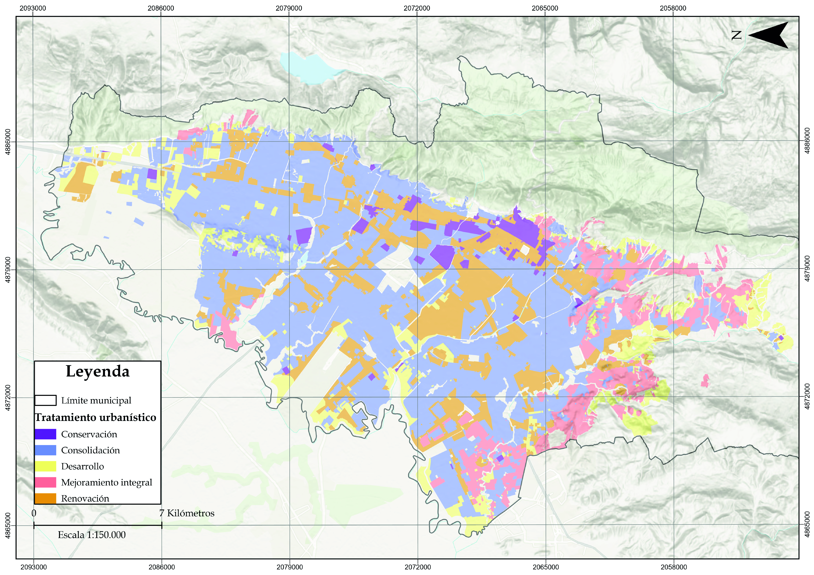
Fuente: Elaboración propia con información de SINUPOT.Estos tratamientos urbanísticos, zonificados en el Plan de Ordenamiento Territorial, sirven para definir las normas de desarrollo territorial en las áreas urbanas y de expansión urbana para restaurar, conservar y potenciar la calidad ambiental; prevenir y mitigar los riesgos naturales y conflictos socioecológicos; mejorar la calidad de vida de los habitantes; y permitir la transición socioecológica hacia la sostenibilidad territorial que requiere este territorio dentro del marco jurídico e institucional actual.
Para esto es necesario que el desarrollo territorial permita gestar transformaciones territoriales en todas las escalas para acelerar esta transición hacia la sostenibilidad territorial por medio de mejoras cuantitativas y cualitativas en la infraestructura vial y de transporte, servicios públicos, espacio público, equipamientos —educación, salud, recreación, cultura y culto— y vivienda.
En el componente V ¿Cómo vivimos? se tratarán estos temas a mayor profundidad para saber tanto su historia como las necesidades y oportunidades que tiene la ciudad para su transformación.
Anexos componente 4
Mapa 1. Geomorfología del territorio político-administrativo del área de estudio
 Fuente: Elaboración Sociedad de Mejoras y Ornato de Bogotá con datos del IGAC.
Fuente: Elaboración Sociedad de Mejoras y Ornato de Bogotá con datos del IGAC.
Definiciones tipos de relieve:
· Abanicos aluviales: Depósitos de sedimentos en forma de abanico generados por corrientes de agua al salir de zonas montañosas hacia terrenos planos.
· Abanicos-terraza diluviales: Formaciones compuestas por sedimentos antiguos depositados por grandes flujos de agua, elevados respecto al nivel de drenaje actual.
· Artesas: Depresiones o valles estrechos de fondo plano y laderas empinadas, formados por la erosión glaciar o fluvial.
· Campos morrénicos: Acumulaciones de rocas y sedimentos no clasificados transportados y depositados directamente por el deshielo o movimiento de antiguos glaciares.
· Crestas y escarpes mayores: Relieves altos y alargados de pendiente muy fuerte o vertical, dominados por procesos de erosión y desprendimiento de rocas.
· Crestones: Cumbres o filamentos rocosos agudos y muy inclinados, formados por capas de roca dura resistentes a la erosión.
· Cuerpos de agua: Superficies hídricas continentales permanentes o semipermanentes, como embalses, lagunas, lagos y ríos principales.
· Cuestas: Cadena de colinas o pendientes compuestas por capas de roca suavemente inclinadas, con un lado de ladera suave y otro de corte abrupto.
· Espinazos: Crestas simétricas muy agudas e inclinadas formadas por estratos rocosos de alta dureza colocados casi de manera vertical.
· Espinazos, crestas y escarpes mayores: Zonas de montaña de alta pendiente y cresta afilada que combinan formaciones estructurales rocosas de fuerte inclinación.
· Filas y vigas: Cumbres alargadas y continuas en sistemas montañosos que funcionan como divisorias de aguas localizadas.
· Glacís coluvial: Pendiente suave ubicada al pie de las montañas, formada por la acumulación gradual de materiales y rocas caídos por gravedad.
· Glacís de acumulación y lomas: Terrenos inclinados y suaves compuestos por sedimentos acumulados que forman elevaciones redondeadas y poco prominentes.
· Lomas: Elevaciones naturales del terreno de baja altura, bordes redondeados y pendientes suaves.
· Misceláneo erosionado: Terrenos fuertemente degradados por la pérdida acelerada de suelo, caracterizados por cárcavas o la presencia de roca expuesta.
· Pantanos: Zonas bajas con suelos saturados de agua o inundados casi de manera permanente, con vegetación acuática adaptada.
· Plano de inundación: Terreno plano contiguo a ríos o corrientes de agua, sujeto a inundaciones periódicas durante las épocas de lluvias.
· Terrazas: Plataformas planas y elevadas situadas en las márgenes de un río, que representan antiguos cauces o planos de inundación superados.
· Vallecitos: Pequeñas depresiones o planos estrechos situados entre colinas o montañas, moldeados por escorrentías menores.
· Vallecitos coluvio-aluviales: Valles pequeños formados por la combinación de sedimentos transportados tanto por corrientes de agua como por gravedad desde las laderas adjuntas.
· Vallecitos glaci-fluviales: Valles pequeños formados por el modelado de antiguos flujos de agua provenientes del deshielo glaciar.
Mapa 2. Modelación geológica del territorio político-administrativo del área de estudio
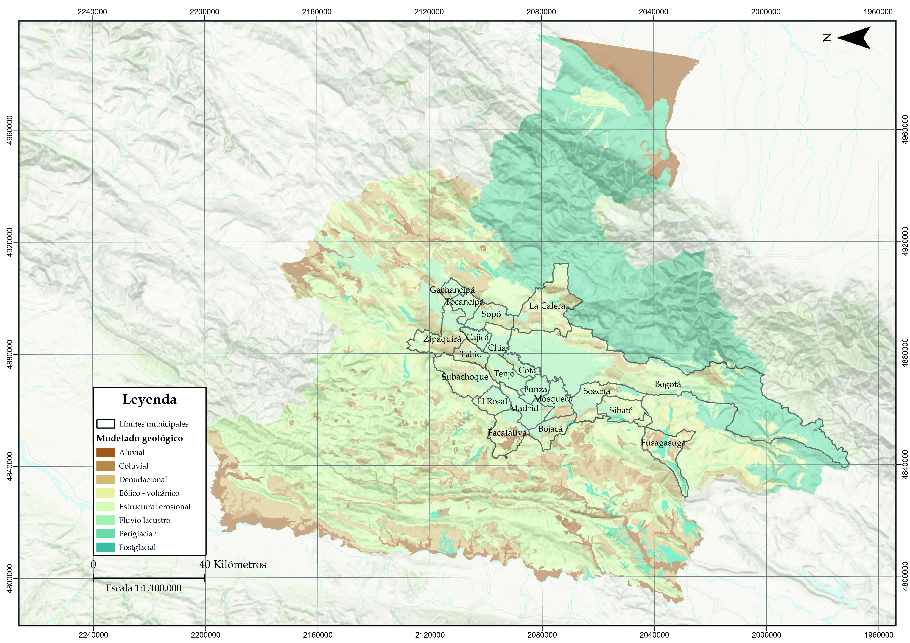
Fuente: Elaboración Sociedad de Mejoras y Ornato de Bogotá con datos del Servicio Geológico Colombiano.Definiciones del modelado geológico:
- Aluvial: Terrenos modelados por el depósito continuo de sedimentos (gravas, arenas, limos) derivados del flujo de corrientes de agua y ríos.
- Coluvial: Depósitos de ladera formados por el transporte de materiales rocosos y suelo desgajados bajo la acción directa de la gravedad.
- Denudacional: Superficies moldeadas por el desgaste, meteorización y erosión continua del relieve preexistente debido a factores climáticos.
- Eólico - volcánico: Suelos y depósitos conformados por la acumulación de cenizas volcánicas transportadas y distribuidas por la acción del viento.
- Estructural erosional: Relieves originados por la deformación tectónica de las rocas (fallas y pliegues) moldeados posteriormente por la erosión.
- Fluvio lacustre: Formaciones compuestas por sedimentos finos depositados en antiguos lagos y zonas de inundación con influencia de corrientes fluviales.
- Periglaciar: Terrenos modelados por ciclos de congelamiento y deshielo en áreas de alta montaña periféricas a las zonas de glaciares.
- Postglacial: Geoformas desarrolladas tras el retiro de los glaciares, moldeadas por la reorganización de los sistemas fluviales y la vegetación.
Mapa 3. Áreas de explotación minera del territorio político-administrativo del área de estudio
 Fuente: Elaboración Sociedad de Mejoras y Ornato de Bogotá con datos de la ANM.
Fuente: Elaboración Sociedad de Mejoras y Ornato de Bogotá con datos de la ANM.
Mapa 4. Suelos disponibles para intervenir del territorio político-administrativo del área de estudio
 Fuente: Elaboración Sociedad de Mejoras y Ornato de Bogotá con datos del IGAC, IDEAM–SINAP.
Fuente: Elaboración Sociedad de Mejoras y Ornato de Bogotá con datos del IGAC, IDEAM–SINAP.
Mapa 5. Pisos térmicos del territorio político-administrativo del área de estudio
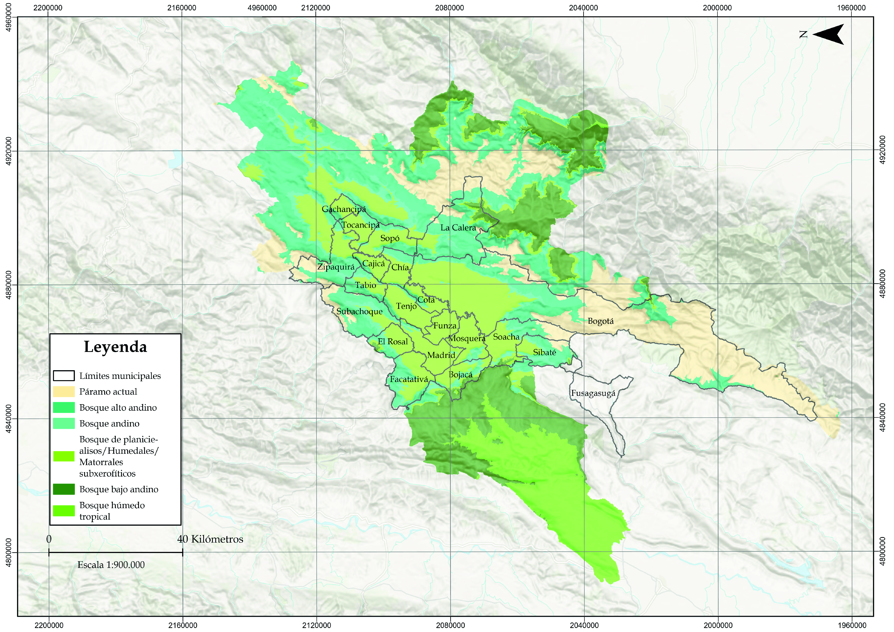
Fuente: Elaboración Sociedad de Mejoras y Ornato de Bogotá con datos del IGAC, IDEAM–SINAP.Mapa 6. Áreas protegidas de importancia ecológica regional y nacional del territorio político-administrativo del área de estudio 20
 Fuente: Elaboración Sociedad de Mejoras y Ornato de Bogotá con datos del SINAP.
Fuente: Elaboración Sociedad de Mejoras y Ornato de Bogotá con datos del SINAP.
Mapa 7. Zonas de vida de Holdridge del territorio político-administrativo del área de estudio 21
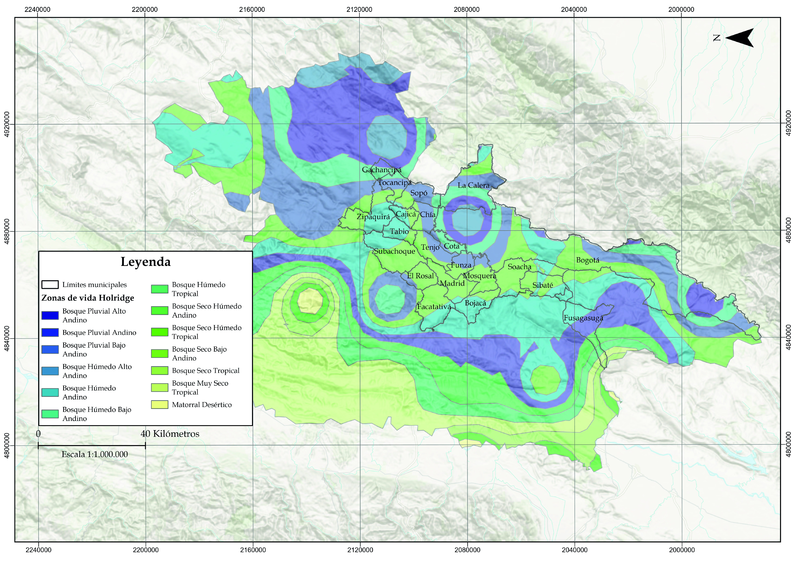
Fuente: Elaboración Sociedad de Mejoras y Ornato de Bogotá con datos del IGAC, IDEAM – SINAP.Mapa 8. Clases agrológicas del suelos del territorio político-administrativo del área de estudio 22
 Fuente: Elaboración Sociedad de Mejoras y Ornato de Bogotá con datos del IGAC.
Fuente: Elaboración Sociedad de Mejoras y Ornato de Bogotá con datos del IGAC.
Definiciones de las clases agrológicas:
- Clase II: Suelos de excelente aptitud agrícola con muy pocas limitaciones de uso. Presentan relieve plano, buena profundidad y alta fertilidad, requiriendo prácticas de manejo sencillas para la producción intensiva.
- Clase III: Suelos con moderadas limitaciones de uso que reducen la variedad de cultivos o requieren prácticas especiales de conservación, como control de erosión leve o adecuación de drenajes.
- Clase IV: Suelos con limitaciones severas que restringen la elección de plantas cultivables y exigen un manejo de conservación muy cuidadoso para uso agrícola o pecuario.
- Clase VI: Suelos no aptos para agricultura intensiva debido a limitaciones severas de pendiente o riesgo de erosión. Su uso recomendado se orienta a pastoreo, agroforestería o conservación.
- Clase VII: Terrenos con limitaciones muy severas (fuertes pendientes, escasa profundidad o erosión avanzada) que imponen restricciones estrictas, destinados principalmente a cobertura forestal y protección ambiental.
- Clase VIII: Suelos sin aptitud agropecuaria ni forestal comercial debido a condiciones extremas (roca expuesta, pendientes pronunciadas o fragilidad ecológica). Su uso está restringido exclusivamente a la conservación de la vida silvestre y la preservación ambiental.
Mapa 9. Áreas protegidas por gestión del riesgo del territorio político-administrativo del área de estudio
 Fuente: Elaboración Sociedad de Mejoras y Ornato de Bogotá con datos del SINAP y la CAR.
Fuente: Elaboración Sociedad de Mejoras y Ornato de Bogotá con datos del SINAP y la CAR.
Mapa 10. Riesgo frente al cambio climático del territorio político-administrativo del área de estudio 23
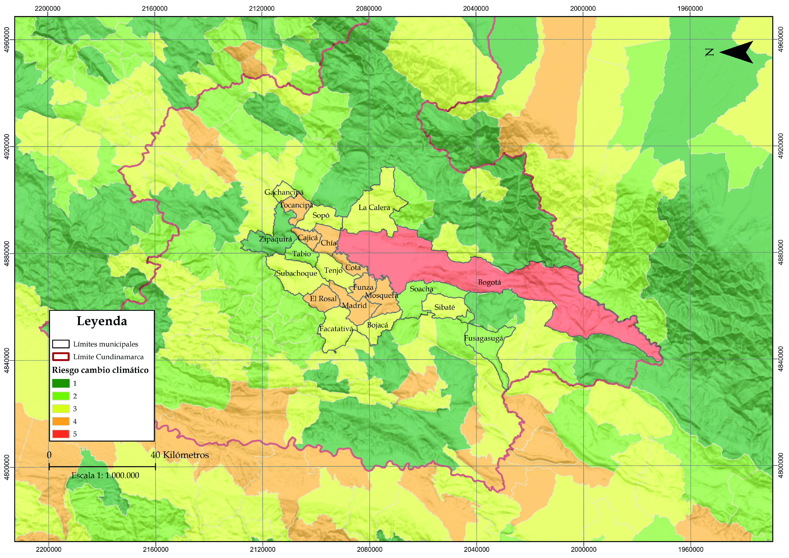
Fuente: Elaboración Sociedad de Mejoras y Ornato de Bogotá con datos del IIDEAM..Mapa 11. Humedad de la tierra del territorio político-administrativo del área de estudio
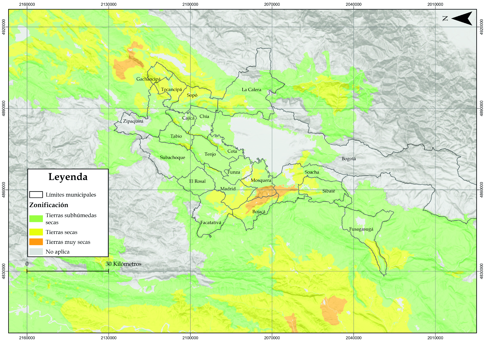
Fuente: Elaboración Sociedad de Mejoras y Ornato de Bogotá con datos del IGAC, IDEAM–SINAP.Mapa 12. Temperatura promedio anual del territorio político-administrativo del área de estudio
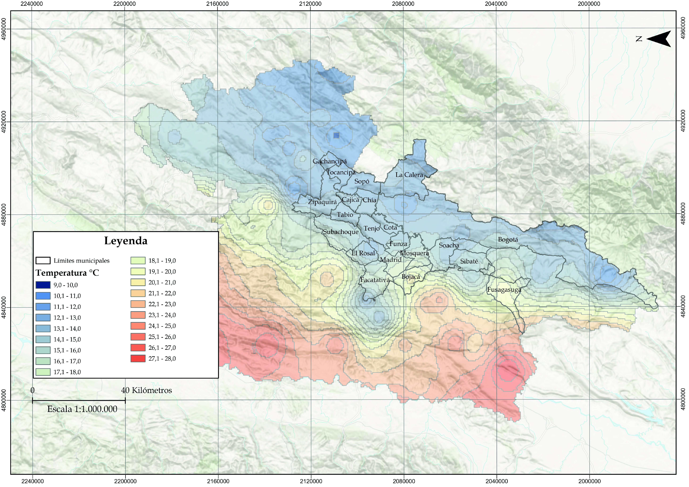
Fuente: Elaboración Sociedad de Mejoras y Ornato de Bogotá con datos del IGAC, IDEAM-_SINAP.Mapa 13. Cuerpos hídricos lóticos y lénticos del territorio político-administrativo del área de estudio
 Fuente: Elaboración Sociedad de Mejoras y Ornato de Bogotá con datos de Open Street Map, IDEAM–SINAP.
Fuente: Elaboración Sociedad de Mejoras y Ornato de Bogotá con datos de Open Street Map, IDEAM–SINAP.
Mapa 14. Potencia de recarga de acuíferos del territorio político-administrativo del área de estudio 24
 Fuente: Elaboración Sociedad de Mejoras y Ornato de Bogotá con datos del IDEAM.
Fuente: Elaboración Sociedad de Mejoras y Ornato de Bogotá con datos del IDEAM.
Mapa 15. Índice Diferencia de Vegetación Normalizada-NDVI
 Este indicador determina la cantidad y el vigor de la vegetación en la zona de estudio mediante el Índice de Vegetación de Diferencia Normalizada-NDVI. Sus valores oscilan entre -1 y 1: los valores cercanos a 1 representan una cobertura vegetal densa y de alta calidad, mientras que los valores bajos o negativos indican menor vegetación o áreas sin cobertura (como agua o suelo desnudo). Su análisis permite identificar la heterogeneidad de las zonas verdes y priorizar su restauración, además de evidenciar las variaciones estructurales entre ecosistemas. Por ejemplo, en las zonas de páramo el NDVI tiende a ser menor debido a las restricciones bioconstructivas del clima de alta montaña, mientras que en las zonas planas no urbanizadas y en los cerros orientales bien conservados se registran los valores más altos.
Este indicador determina la cantidad y el vigor de la vegetación en la zona de estudio mediante el Índice de Vegetación de Diferencia Normalizada-NDVI. Sus valores oscilan entre -1 y 1: los valores cercanos a 1 representan una cobertura vegetal densa y de alta calidad, mientras que los valores bajos o negativos indican menor vegetación o áreas sin cobertura (como agua o suelo desnudo). Su análisis permite identificar la heterogeneidad de las zonas verdes y priorizar su restauración, además de evidenciar las variaciones estructurales entre ecosistemas. Por ejemplo, en las zonas de páramo el NDVI tiende a ser menor debido a las restricciones bioconstructivas del clima de alta montaña, mientras que en las zonas planas no urbanizadas y en los cerros orientales bien conservados se registran los valores más altos.
Fuente: Elaboración Sociedad de Mejoras y Ornato de Bogotá con información de la Living Atlas de ESRI.
Mapa 16. Calidad de los suelos: erosión 25
 La erosión del suelo en la Sabana de Bogotá es resultado de la deforestación histórica en laderas y bosques nativos, la expansión agropecuaria no sostenible y la presión urbana sobre la cobertura vegetal. Prácticas como la labranza intensiva y la compactación aceleran la pérdida de la capa fértil, reducen la infiltración y aumentan la escorrentía superficial, derivando en la sedimentación de ríos y humedales, la pérdida de productividad agrícola y un mayor riesgo de inundaciones. Este mapa espacializa las áreas más afectadas y priorizadas para la restauración de la cobertura vegetal y la recuperación de la capa productiva del suelo.
La erosión del suelo en la Sabana de Bogotá es resultado de la deforestación histórica en laderas y bosques nativos, la expansión agropecuaria no sostenible y la presión urbana sobre la cobertura vegetal. Prácticas como la labranza intensiva y la compactación aceleran la pérdida de la capa fértil, reducen la infiltración y aumentan la escorrentía superficial, derivando en la sedimentación de ríos y humedales, la pérdida de productividad agrícola y un mayor riesgo de inundaciones. Este mapa espacializa las áreas más afectadas y priorizadas para la restauración de la cobertura vegetal y la recuperación de la capa productiva del suelo.
Fuente: Elaboración Sociedad de Mejoras y Ornato de Bogotá con información de la CAR.
Sección 5.1.1 Sistema vial y de transporte Sección 5.1.2 Sistema de Servicios Públicos Sección 5.1.3 Sistema de espacio público Sección 5.2.1 Sistema de equipamientos Sección 5.2.2 Sistema de hábitat
Footnotes
-
Disponible en: Bogotá Metropolitana. Ciudad, territorio y ambiente ↩
-
Puede consultar el crecimiento de la huella urbana de Bogotá de manera interactiva en: DATACIVILIDAD ↩
-
Decreto Legislativo 3640 del 17 de diciembre de 1954. ↩
-
Se considera como índice mínimo de espacio público efectivo, para ser obtenido por las áreas urbanas de los municipios y distritos dentro de las metas y programa de largo plazo establecidos por el Plan de Ordenamiento Territorial, un mínimo de quince (15m²) metros cuadrados por habitante, para ser alcanzado durante la vigencia del plan respectivo (Artículo 2.2.3.2.7 del Decreto 1077 de 2015). ↩
-
Ley 388 de 1997: Tratamientos urbanísticos en el suelo urbano y de expansión urbana**:** artículo 13. Núm. 4 - Componente urbano del Plan de Ordenamiento. ↩
-
Acuerdo 7 de 1979: artículo 53 a 76. ↩
-
Artículo 392. ↩
-
Artículo 360. ↩
-
Artículo 2.2.1.1. ↩
-
Artículo 255. ↩
-
Decreto 1077 de 2015: artículo 2.2.1.1. y Decreto Distrital 555 de 2021: artículo 273. ↩
-
Decreto 1077 de 2015: artículo 2.2.1.1. y Decreto Distrital 555 de 2021: artículo 301 ↩
-
Artículo 2.2.1.1. ↩
-
Ibid. ↩
-
Decreto Distrital 555 de 2021: artículo 301. ↩
-
Artículo 308. ↩
-
Ibid., artículo 332. ↩
-
Ibid., artículo 343. ↩
-
Artículo 48. ↩
-
Consúltelo de manera interactiva en: DATACIVILIDAD ↩
-
Consúltelo de manera interactiva en: DATACIVILIDAD ↩
-
Consúltelo de manera interactiva en: DATACIVILIDAD ↩
-
Consúltelo de manera interactiva en: DATACIVILIDAD ↩
-
Consúltelo de manera interactiva en: DATACIVILIDAD ↩
-
Consúltelo de manera interactiva en: DATACIVILIDAD ↩